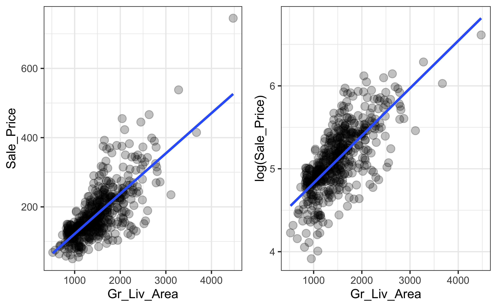

Main topics
- Association and correlation
- Simple linear regression (SLR) models
- Least squares (LS) estimation
- Fitting SLR models in R with the
lm()function - Fitted values and residuals
- Maximum likelihood estimation
Brandon M. Greenwell
University of Cincinnati
lm() functionpkgs <- c(
"AmesHousing", # for Ames, Iowa housing data set
"ggplot2", # for fancy graphics
"gridExtra", # for displaying multiple (gg)plots in the same graph
"HistData", # for Galton data set
"investr" # for crystal weight and arsenic data sets
)
install <- setdiff(pkgs, installed.packages()[, "Package"])
install.packages(install)
library(ggplot2)
theme_set(theme_bw()) # set ggplot2 theme for the lecture
Visit Frank Harrell’s Statistical Thinking site at https://www.fharrell.com/
# Simulate data from different SLR models
set.seed(101) # for reproducibility
x <- seq(from = 0, to = 4, length = 100)
y <- cbind(
1 + x + rnorm(length(x)), # linear
1 + (x - 2)^2 + rnorm(length(x)), # quadratic
1 + log(x + 0.1) + rnorm(length(x), sd = 0.3), # logarithmic
1 + rnorm(length(x)) # no association
)
# Scatterplot of X vs. each Y in a 2-by-2 grid
par(mfrow = c(2, 2))
for (i in 1:4) {
plot(x, y[, i], col = adjustcolor("cornflowerblue", alpha.f = 0.7),
pch = 19, xlab = "X", ylab = "Y")
}\[Cor\left(X, Y\right) = \rho = \frac{Cov\left(X,Y\right)}{\sigma_X\sigma_Y}\]
Range: \(-1 \le r \le 1\)
What does it measure?
Other useful correlation measures also exist:
Spearman’s rank correlation (or Spearman’s \(\rho\)) only assumes a monotonic relationship between \(X\) and \(Y\)
It is common to test the hypothesis \(H_0: \rho = 0\) vs. \(H_1: \rho \ne 0\)
Rejecting \(H_0\) is only evidence that \(\rho\) is not exactly zero (NOT VERY USEFUL, OR INTERESTING)
A \(p\)-value does not measure the magnitude/strength of the (linear) association
Sample size affects the \(p\)-value! üò±
set.seed(1050) # for reproducibility
n <- 100
x <- rnorm(n)
y <- 1 + 0.001*x + rnorm(n)
cor.test(x, y)
Pearson's product-moment correlation
data: x and y
t = -0.0028012, df = 98, p-value = 0.9978
alternative hypothesis: true correlation is not equal to 0
95 percent confidence interval:
-0.1966901 0.1961461
sample estimates:
cor
-0.0002829617 set.seed(1051) # for reproducibility
n <- 10000000 # n = ten million
x <- rnorm(n)
y <- 1 + 0.001*x + rnorm(n)
cor.test(x, y)
Pearson's product-moment correlation
data: x and y
t = 3.731, df = 9999998, p-value = 0.0001907
alternative hypothesis: true correlation is not equal to 0
95 percent confidence interval:
0.0005600528 0.0017996412
sample estimates:
cor
0.001179847 The real question is, are \(X\) and \(Y\) practically uncorrelated?

If you get the joke, then you probably understand enough about correlation!
Also, see this talk by my old adviser, Thad Tarpey: “All Models are Right… most are useless.”
There’s a formal relationship between Pearson’s correlation coefficient (\(\rho\)) and the SLR model
“Simple” linear relationships can be described by an intercept and slope:
“Simple” here means two variables, \(x\) and \(y\) (but \(y\) can be linearly related to several variables)
Check out this paper for useful background on the Ames housing data in regression
ames <- AmesHousing::make_ames() # full (and clean) data set
ames$Sale_Price <- ames$Sale_Price / 1000 # rescale response
# We'll just look at a random sample of 500 observations/homes
set.seed(750) # for reproducibility
ids <- sample.int(nrow(ames), size = 500) # rows to select at random
ames.trn <- ames[ids, ] # training (or model building) data
names(ames.trn) # print column names [1] "MS_SubClass" "MS_Zoning" "Lot_Frontage"
[4] "Lot_Area" "Street" "Alley"
[7] "Lot_Shape" "Land_Contour" "Utilities"
[10] "Lot_Config" "Land_Slope" "Neighborhood"
[13] "Condition_1" "Condition_2" "Bldg_Type"
[16] "House_Style" "Overall_Qual" "Overall_Cond"
[19] "Year_Built" "Year_Remod_Add" "Roof_Style"
[22] "Roof_Matl" "Exterior_1st" "Exterior_2nd"
[25] "Mas_Vnr_Type" "Mas_Vnr_Area" "Exter_Qual"
[28] "Exter_Cond" "Foundation" "Bsmt_Qual"
[31] "Bsmt_Cond" "Bsmt_Exposure" "BsmtFin_Type_1"
[34] "BsmtFin_SF_1" "BsmtFin_Type_2" "BsmtFin_SF_2"
[37] "Bsmt_Unf_SF" "Total_Bsmt_SF" "Heating"
[40] "Heating_QC" "Central_Air" "Electrical"
[43] "First_Flr_SF" "Second_Flr_SF" "Low_Qual_Fin_SF"
[46] "Gr_Liv_Area" "Bsmt_Full_Bath" "Bsmt_Half_Bath"
[49] "Full_Bath" "Half_Bath" "Bedroom_AbvGr"
[52] "Kitchen_AbvGr" "Kitchen_Qual" "TotRms_AbvGrd"
[55] "Functional" "Fireplaces" "Fireplace_Qu"
[58] "Garage_Type" "Garage_Finish" "Garage_Cars"
[61] "Garage_Area" "Garage_Qual" "Garage_Cond"
[64] "Paved_Drive" "Wood_Deck_SF" "Open_Porch_SF"
[67] "Enclosed_Porch" "Three_season_porch" "Screen_Porch"
[70] "Pool_Area" "Pool_QC" "Fence"
[73] "Misc_Feature" "Misc_Val" "Mo_Sold"
[76] "Year_Sold" "Sale_Type" "Sale_Condition"
[79] "Sale_Price" "Longitude" "Latitude" [,1] [,2]
[1,] 177.5 1573
[2,] 68.4 1128
[3,] 248.9 1646
[4,] 169.0 1102
[5,] 300.0 1638
[6,] 398.8 2690
Pearson's product-moment correlation
data: ames.trn$Sale_Price and ames.trn$Gr_Liv_Area
t = 24.739, df = 498, p-value < 2.2e-16
alternative hypothesis: true correlation is not equal to 0
95 percent confidence interval:
0.7004607 0.7794773
sample estimates:
cor
0.7425415 This doesn’t tell us much about the nature of the linear relationship between Gr_Liv_Area and Sale_Price
Scatterplot using base R graphics
Scatterplot using ggplot2 graphics
Scatterplot using lattice graphics
Which plot looks “better”?
First developed by Sir Francis Galton in the later part of the 19-th century
Studied heights of parents and their children (next slide)
Noted that the heights of children with tall/short parents tended to “revert” or “regress” to the mean of the group
The term “regression” persists to this day (unfortunately)
See this article on “Regression toward the mean”
[1] 928 2 parent child
1 70.5 61.7
2 68.5 61.7
3 65.5 61.7
4 64.5 61.7
5 64.0 61.7
6 67.5 62.2
7 67.5 62.2
8 67.5 62.2
9 66.5 62.2
10 66.5 62.2Let’s plot the data!
\[H_{child} \approx 46.135 + 0.326 \times H_{midparent}\]
Simple linear regression: \(Y = \beta_0 + \beta_1 X + \epsilon\)
Multiple linear regression: \(Y = \beta_0 + \sum_{i=1}^p \beta_p X_p + \epsilon\)
Polynomial regression: \(Y = \beta_0 + \sum_{i=1}^p \beta_p X^p + \epsilon\)
Logarithmic: \(Y = \beta_0 + \beta_1 \log\left(X + 0.1\right) + \epsilon\)
Nonlinear regression: \(Y = \frac{\beta_1 X}{\left(\beta_2 + X\right)} + \epsilon\)
Multiplicative: \(Y = \beta X \epsilon\)
Assuming \(\epsilon \sim D\left(\mu, \sigma\right)\)
Data: \(\left\{\left(X_i, Y_i\right)\right\}_{i=1}^n\)
Model: \(Y_i = \beta_0 + \beta_1 X_i + \epsilon_i\)
\(Y_i\) is a continuous response
\(X_i\) is a continuous predictor
\(\beta_0\) is the intercept of the regression line (also called the bias term)
\(\beta_1\) is the slope of the regression line
\(\epsilon_i \stackrel{iid}{\sim} D\left(0, \sigma^2\right)\)
For \(i\) and \(j\) in \(\left\{1, 2, \dots, n\right\}\) and \(i \ne j\)
\(\quad E\left(\epsilon_i\right) = 0\)
\(\quad Var\left(\epsilon_i\right) = \sigma^2\) (homoscedacticity üò±)
\(\quad Cov\left(\epsilon_i, \epsilon_j\right) = 0\) (independence)
Assumptions 1–3 can be summarized as \(\epsilon_i \stackrel{iid}{\sim} D\left(0, \sigma^2\right)\), where \(iid\) refers to independent and identically distributed.
Simple linear regression: \(Y_i = \beta_0 + \beta_1 X_i + \epsilon_i\)
The error term is a random variable; hence, \(Y_i\) is also a random variable (Why? ü§î)
\(Cor\left(Y_i, Y_j\right) = 0\) \(\forall i \ne j\) (Why? ü§î)
\(Y_i = \beta_0 + \beta_1 X_i + \epsilon_i, \quad i = 1, 2, \dots, n\)
where \(\epsilon_i \stackrel{iid}{\sim} N\left(0, \sigma^2\right)\)
OR, EQUIVALENTLY
\(Y_i \stackrel{indep.}{\sim} N\left(\mu_i, \sigma^2\right), \quad i = 1, 2, \dots, n\)
where \(\mu_i = \beta_0 + \beta_1 X_i\) is called the linear predictor (LP)
\(\beta_0\) is the y-intercept (or bias term)
It represents the mean response when \(X = 0\); that is \(\beta_0 = E\left(Y|X = 0\right)\)
In general, the intercept is of little practical interest (this is especially true in MLR or when zero is not a valid value of \(X\))
\(\beta_1\) is the slope of the regression line
The slope of a line represents a rate of change
It represents the average change in \(Y\) per one-unit increase in \(X\)
Ideally, we want estimates of \(\beta_0\) and \(\beta_1\) that give us the “best fitting” line
The most common approach is to use the method of least squares (LS) estimation
The LS estimates of \(\beta_0\) and \(\beta_1\) minimize the residual sum of squares (RSS):
\[SSE\left(\beta_0, \beta_1\right) = \sum_{i=1}^n\left[Y_i - \left(\beta_0 + \beta_1 X_i\right)\right]^2 = \sum_{i=1}^n\left(Y_i - \beta_0 - \beta_1 X_i\right)^2\]
\(Y_i - \left(\beta_0 + \beta_1 X_i\right) = \epsilon_i\) (\(i = 1, 2, \dots, n\)) are called the residual errors (or just residuals)
Why minimize \(SSE = \sum_{i=1}^n\epsilon_i^2\)? Why not \(\sum_{i=1}^n\left|\epsilon_i\right|\) or something more general like \(\sum_{i=1}^n\psi\left(\epsilon_i\right)\)?
Need to minimize (w.r.t \(\beta_0\) and \(\beta_1\)) \[SSE\left(\beta_0, \beta_1\right) = \sum_{i=1}^n\left(Y_i - \beta_0 - \beta_1 X_i\right)^2\]
Need to solve a system of two1 equations2:
\[\begin{aligned}\frac{\partial SSE}{\partial \beta_0} &= -2n\left(\bar{Y} - \beta_0 - \beta_1\bar{X}\right) = 0 \\ \frac{\partial SSE}{\partial \beta_1} &= -2\left(\sum_{i=1}^nX_iY_i - n\beta_0\bar{X} - \beta_1\sum_{i=1}^nX_i^2\right) = 0\end{aligned}\]
\[\begin{align}\hat{\beta}_1 &= \frac{\sum_{i=1}^n\left(X_i - \bar{X}\right)\left(Y_i - \bar{Y}\right)}{\sum_{i=1}^n\left(X_i - \bar{X}\right)^2} = \frac{S_{xy}}{ S_{xx}} = \sum_{i=1}^n a_iY_i \\ \hat{\beta}_0 &= \bar{Y} - \hat{\beta}_1 \bar{X} = \sum_{i=1}^n b_iY_i\end{align}\]
lm() functionThe lm() function can be used to fit the SLR model (or any LM for that matter!)
?lm to view the associated documentation/help pageThe statement lm(y ~ x, data = df) fits an SLR model by regressing y on x, where y and x are columns in some data frame named df
To suppress the intercept term, use y ~ x - 1 (not often necessary)
Let’s fit an SLR model to the crystal weight data using weight as the response and time as the predictor and interpret the estimated coefficients.
Call:
lm(formula = weight ~ time, data = crystal)
Residuals:
Min 1Q Median 3Q Max
-1.96371 -0.73464 0.05629 0.89193 1.40800
Coefficients:
Estimate Std. Error t value Pr(>|t|)
(Intercept) 0.001429 0.599387 0.002 0.998
time 0.503429 0.035197 14.303 6.69e-09 ***
---
Signif. codes: 0 '***' 0.001 '**' 0.01 '*' 0.05 '.' 0.1 ' ' 1
Residual standard error: 1.062 on 12 degrees of freedom
Multiple R-squared: 0.9446, Adjusted R-squared: 0.94
F-statistic: 204.6 on 1 and 12 DF, p-value: 6.688e-09The average final weight of crystals increases by an estimated 0.503 grams for every one-hour increase in growth time
Does interpreting the intercept make sense in this problem?
The fitted model is given by \(\hat{E}\left(Y|X=x\right) = \hat{\beta}_0 + \hat{\beta}_1 X\)
We refer to \(\hat{f}\left(x\right) = \hat{E}\left(Y|X=x\right)\) as the predicted value (or estimated mean response) at \(X = x\)
The fitted values: \(\hat{Y}_i = \hat{\beta}_0 + \hat{\beta}_1 X_i, \quad i = 1, 2, \dots, n\) (these are just the predictions corresponding to the original \(n\) observations)
Residuals: \(r_i = Y_i - \hat{E}\left(Y_i|X_i=x_i\right)\)
# Residual plot
ggplot(data = crystal, aes(x = time, y = weight)) +
geom_segment(aes(x = time, y = fitted(fit),
xend = time, yend = weight),
alpha = 0.75, linetype = "solid") +
geom_point(size = 2, color = "cornflowerblue") +
geom_smooth(method = "lm", formula = y ~ x,
se = FALSE, alpha = 0.5, color = "black") +
geom_point(aes(x = time, y = fitted(fit)), color = "darkorange", size = 2) +
theme_light() +
xlab("Time (hours)") +
ylab("Weight (grams)") +
ggtitle("Crystal weight data")In R, use fitted(mymodel) and residuals(mymodel) to obtain the fitted values and residuals, respectively
time weight fitted residuals
1 2 0.08 1.008286 -0.9282857
2 4 1.12 2.015143 -0.8951429
3 6 4.43 3.022000 1.4080000
4 8 4.98 4.028857 0.9511429
5 10 4.92 5.035714 -0.1157143
6 12 7.18 6.042571 1.1374286 1 2 3 4 5 6
-0.9282857 -0.8951429 1.4080000 0.9511429 -0.1157143 1.1374286 Simulate \(Y_i \stackrel{indep.}{\sim} N\left(\mu = 1 + 2X_i, \sigma = 1.2\right)\) for \(i = 1, 2, \dots, 30\), where \(X_i \stackrel{iid}{\sim} U\left(0, 5\right)\). Hint: use runif() to simulate from a uniform distribution (see ?runif for details).
Fit an SLR model to the data and estimate the slope and intercept. Do the estimated slope and intercept match closely with the true values? What happens to the estimates if we generate the response from a \(N\left(\mu = 1 + 2X_i, \sigma = 0.2\right)\) distribution instead?
\(\sum_{i=1}^n e_i = 0\) (Why? ü§î)
\(\sum_{i=1}^n e_i^2\) is a minimum
\(\sum_{i=1}^n X_ie_i = 0\)
\(\sum_{i=1}^n \hat{Y}_ie_i = 0\)
The LS regression line passes through the point \(\left(\bar{X}, \bar{Y}\right)\) (i.e., the center of the training data)
Assuming \(\epsilon_i \stackrel{iid}{\sim} N\left(0, \sigma^2\right)\), we have an additional (unknown) parameter: \(\sigma^2\)
How do we estimate \(\sigma^2\)?
Since \(Y_i \stackrel{indep.}{\sim} N\left(\beta_0 + \beta_1X_i, \sigma^2\right)\), the likelihood function for the data (as a function of \(\beta_0\), \(\beta_1\), and \(\sigma^2\)) is given by
\[L\left(\beta_0, \beta_1, \sigma^2\right) = \prod_{i=1}^nf\left(Y_i; \beta_0 + \beta_1X_i, \sigma^2\right),\] where \[f\left(Y_i; \beta_0 + \beta_1X_i, \sigma^2\right) = \frac{1}{\sigma\sqrt{2\pi}}\exp\left(-\frac{Y_i - \beta_0 - \beta_1 X_i}{2\sigma^2}\right)\] is the probability density function (PDF) of a normal distribution with mean \(\beta_0 + \beta_1X_i\) and variance \(\sigma^2\).
Maximizing the likelihood is the same as maximizing the log-likelihood (Why? ü§î) \[l = \log\left(L\right)\]
The full log-likelihood is given by
\[l = -\frac{n}{2}\log\left(2\pi\right) - \frac{n}{2}\log\left(\sigma^2\right) - \frac{1}{2\sigma^2}\sum_{i=1}^n\left(Y_i - \beta_0 - \beta_1X_i\right)^2\]
Maximum likelihood (ML) estimates of \(\beta_0\), \(\beta_1\), and \(\sigma^2\) can be found by equating the (partial) derivatives of \(l\) to zero:
\(\frac{\partial l}{\partial \beta_0} = \frac{1}{\sigma^2}\sum_{i=1}^n\left(Y_i - \beta_0 - \beta_1X_i\right)\)
\(\frac{\partial l}{\partial \beta_1} = \frac{1}{\sigma^2}\sum_{i=1}^nX_i\left(Y_i - \beta_0 - \beta_1X_i\right)\)
\(\frac{\partial l}{\partial \sigma^2} = -\frac{n}{2\sigma^2} + \frac{1}{\sigma^4}\sum_{i=1}^n\left(Y_i - \beta_0 - \beta_1X_i\right)^2\)
As it turns out, the ML estimates of \(\beta_0\) and \(\beta_1\) (under our current assumptions) are the same as the corresponding LS estimates
ML estimation, however, also provides us with an estimate of the error variance \(\sigma^2\)
\[\hat{\sigma}_{MLE}^2 = \frac{1}{n}\sum_{i=1}^n e_i^2\]
\[\hat{\sigma}^2 = \frac{1}{n-2}\sum_{i=1}^n e_i^2 = MSE\]
A rocket motor is manufactured by bonding an igniter propellant and a sustainer propellant together inside a metal housing. The shear strength of the bond ( \(Y\) ) between the two types of propellant is an important quality characteristic. It is suspected that the shear strength is related to the age ( \(X\) ) of the batch of sustainer propellant. A total of \(n = 20\) observations on shear strength (measured in psi) and age (measured in weeks) are available in the file rocket.csv.
Use this R script to analyze the data with simple linear regression.

BANA 7052: Applied Linear Regression